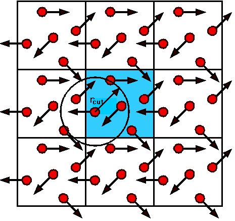

Periodic Boundary Condition
Periodic Boundary Condition
A periodic boundary is an important technique in a molecular dynamics simulation. It is a clever trick to make a simulation that consists of only a few hundred atoms behave as if it was infinite in size. The main reason this is required is to remove the effects of the surface, which any finite sample of matter must have, and which ensure that the internal structure of the sample is dominated by surface rather than bulk forces (like surface tension - recall how a small drop of water tries to assume a spherical shape, in such cases the surface forces overwhelm the structure of the bulk liquid).
The figure below illustrates the concept of periodic boundary conditions. The shaded box represents the system we are simulating, while the surrounding boxes are exact copies in every detail - every particle in the simulation box has an exact duplicate in each of the surrounding cells. Even the velocities (indicated by the arrows) are the same. This arrangement is imagined to fill the whole of space. A result of this is that whenever an atom leaves the simulation cell, it is replaced by another with exactly the same velocity, entering from the opposite cell face. So the number of atoms in the cell is conserved. Furthermore, no atom feels any surface forces, as these are now completely removed.

In the figure rcut is the cutoff radius that is normally applied when calculating the force between two atoms. As you can see, an atom may interact with one in the neighbouring cell (which is an image of one of the atoms in the simulation cell) because it is within the cutoff radius. It ignores the equivalent atom in the simulation cell because it is too far away. In other cases the interaction comes from an atom in the simulation cell itself. Thus the interaction that is calculated is always with the closest image. This is known as the minimum image convention.
Note that the cutoff radius is always chosen so that an atom can interact with only one image of any given atom. This means that rcut cannot be greater than half the width of the cell.